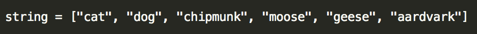
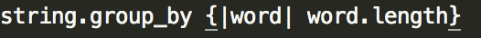

The Joy of Enumerables
The Ways to group_by
November 1, 2015
Now that you've got some Ruby under your belt, it's time to improve your skills and iterate over specific items of your array. While the .each method will apply the same set of iterations over every single item in your array, you can customize which particular items you want to change with certain enumerable methods.
Think of enumerables as iterations on steriods. Enumerables bring in a variety of particular methods that will respond dynamically to items in an array. For this post we're going to talk about the group_by method, and how you can split an array up into how they respond to a code block.
By using group_by, you can take an array and split it into a hash with each value giving you the result of a code block. Let's see an example to understand just how this method works.
Let's say I have an array of strings that I want to place into groups based on how many letters are in each word. Consider the array below that has a number of words of various length.  If we wanted to place each word into a group signifying the word length, we could run the following code to get everything organized and see exactly how many letters are contained in each word. Notice how group_by splits the array into new groups based on a hash value.  Try using the group_by method on your own to get your arrays split into a hash based on your criteria. This method is also helpful to easily get your array into a hash which can be a bit more dynamic.